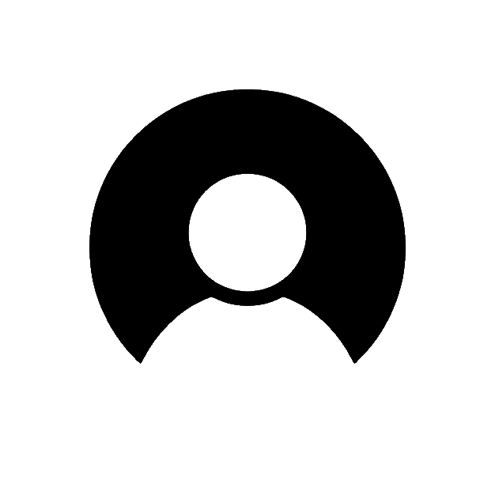

La segunda ley de Newton, enunciada por Sir Isaac Newton en el siglo XVII, es uno de los pilares
fundamentales de la física clásica. Junto con la primera y tercera ley, forma el núcleo de la
dinámica, la rama de la física que estudia las causas del movimiento de los cuerpos.
Esta ley establece la relación entre la fuerza neta que actúa sobre un objeto, su masa
y la aceleración que experimenta. De manera simple y concisa, la segunda ley de Newton
puede expresarse mediante la ecuación:
Fórmula matemática
Esta ecuación representa una idea profundamente intuitiva:
cuanto mayor es la fuerza aplicada a un objeto, mayor es su
aceleración; y cuanto mayor es la masa del objeto, menor es
su aceleración ante una misma fuerza. Esta relación directa
e inversa es la esencia de cómo los cuerpos responden a los
estímulos del entorno.
La segunda ley de Newton se aplica a una variedad casi ilimitada de situaciones físicas, desde los movimientos
más simples hasta los más complejos. Algunas de sus aplicaciones más comunes incluyen: